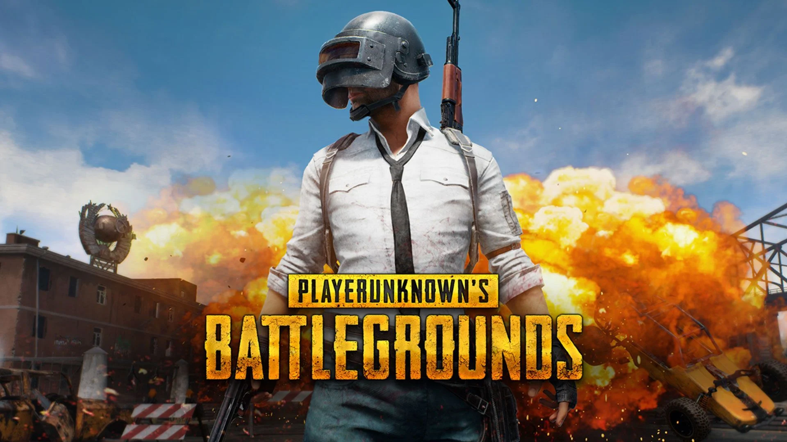

PUBG: My only therapy
The year was 2018, when I first started playing PUBG. It was an wonderful experience at first. I still remember the day and the game where I for the first time on PUBG defeated the last enemy. I had like 3 friends in the background, all of them were chearing and yelling at me to kill him. I still remember what time it was, which place it took, everything. So vivid. I kept going like this for another couple of years. Made a lot of friends and lost a bunch of too. I still dream about my past, my 2018-2019 past self. I played not only PUBG but various PC games along with it. But I never stopped playing PUBG for one reason that is cause of the reuinion between friends. That's one of the most wonderful thing ever happended to me.
I used to be really nervous around strangers, I guess PUBG actually helped me to get out of that comfort zone. I'll forever be grateful for this game. Still remember putting 8x on AR guns and even pistols. Whenver an emotional PUBG reel pops up on my screen I just wait and watch and try to fantacize the past or maybe I try to live that life once more. It works better if you put that "On my way" song in the background. All those memories just rushes into my head, makes me feel better and sad at the same time.
Now the year is 2022. It's been 4 years since I first started playing this game. So many things have been changed. PUBG got banned in India in the meantime. I wasn't active for more than a half year. Lost a bunch of close friends. That shit hurt. But anyway, we keep living on. So our government came up with BGMI. Which is not so great only if you compare to the original version. Originals are always the OG's. I wish PUBG was here.